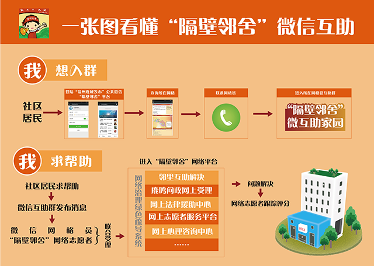

鹿城区“隔壁邻舍”微互助家园

我要加入微群
选择社区
点击选择对应的社区加入微群
七都社区
杨府山社区
丰汇社区
新田园社区
灰桥社区
洪殿社区
陡门社区
芳园社区
绿园社区
横河社区
蒲鞋市社区
蒋家桥社区
青园社区
浦东社区
宏源社区
开源社区
绣山社区
火车站社区
微信互助足迹
咨询类
瑞安市国土资源局没有对肖宅村村委会破坏耕地...
鹿城问政平台
未办结
潘益飞 2015-04-23
咨询类
瓯海大道部分辅助车道(文昌路至南堡）...议
鹿城问政平台
未办结
金丽琼 2015-03-19
咨询类
建议对龙港镇兴河路和校前路之间的屋后违章建筑建议...
鹿城问政平台
未办结
陈学正 2015-02-23
投诉类
法律基本常识：问没行为地公安机关立案...
鹿城问政平台
办结中
黄锦英 2015-01-11
求助类
建议增加上田菜场公交线路
鹿城问政平台
已办结
邵玉燕 2014-04-23
志愿者
8001网格
8002网格
范围：前沙村8002网格地理位置:东至中心路全部，西至渔船浦。具体包括:前进后路、中心路、以河为界欢乐路1 ——12号、红旗路1-29号。
8003网格
范围：位于七都街道前沙村东首，东至建设路陈碎周家，西至前进路余成球家，南至马福生家，北至陈立波家
8004网格
范围：琯瑭路、上涂路
8005网格
上坦屋路、后东路
我要志愿服务